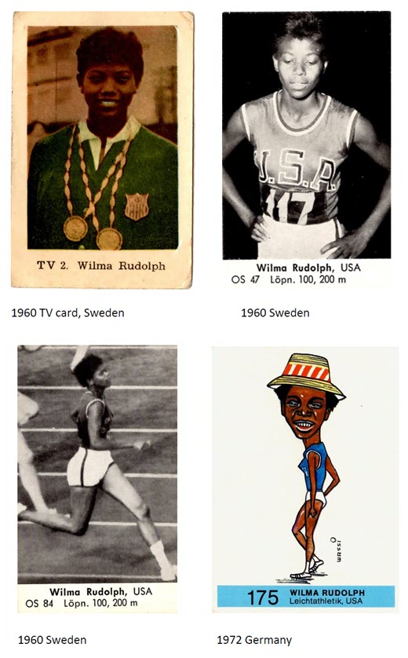
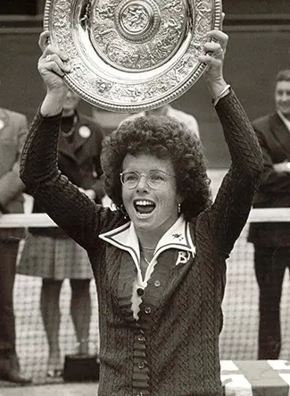

Wilma Rudolph Cards

Billie Jean King Awards
Wilma Rudolph’s cards are very rare collectible trading cards, as women of color make up less than 1% of the athletes featured in the Olympic card collection. Wilma represented persistence and determination, as she had to overcome many obstacles to get to the Olympics. Growing up in a small town in Tennessee, Rudolph’s leg was partially paralyzed at the age of 4, forcing her to wear a leg brace from the ages of 6 - 12. Despite this challenge, she still found her love and talent for running. During the 1960s, many women were abandoning sports and working out due to the idea that it gave them an “unfeminine physique”, something that was very frowned upon. Despite this way of thinking, many Black colleges saw it as an opportunity to uplift racial injustices. She was coached and trained in Nashville at Tennessee A&I University by coach Ed Temple. At just 16, Rudolph ran the 4x100 meter relay team at the Olympics, earning a bronze medal. Rudolph later competed in the 1960 Olympics in Rome, being the first Black woman to win 3 gold medals in a single Olympic Games. She won gold in the 100-meter dash, 200-meter dash, and 4x100 meter relay. With the 1960 Olympic Games being the first Olympic Games to have worldwide TV coverage, Rudolph received significant publicity for her achievements. She was given many nicknames, such as “The Black Pearl” by the Italian press and “The Queen of the Olympics” by the Russian press. Rudolph also presented herself in a traditionally feminine manner, challenging the stereotype that female athletes could not be both athletic and feminine. She helped to break stereotypes placed on Black women and women in sports. Rudolph helped propel track and field for girls for future generations, proving to the world that women can be just as athletic as men.
Billie Jean King won many trophies at Wimbledon during the 1960s, using her success to help advance women's sports and advocate for equality. Her breakthroughs proved that female athletes were just as marketable as men, and she demanded equal respect. At a young age, King found her talent in sports. She first trained in softball and baseball, competing in leagues with girls five to seven years older than her. At the age of 11, however, her parents made her switch from softball to tennis as they believed King should participate in a more “ladylike” sport. King didn't hold back on the court and was often criticized for her aggressive style of play. She also had to learn about gender discrimination in sports, as she wasn’t allowed to be a part of a group picture because she was wearing tennis shorts instead of a tennis dress. During the 1960s, King had many Wimbledon breakthroughs, earning three trophies within ten years. In 1961, King and her partner Karen Hantze Susman became the youngest pair to win the Wimbledon women’s doubles title. Five years later, King won her first Wimbledon singles title, making her the world's number one-ranked player. The Open Era began in 1968, ending the division between amateurs and pro-only circuits, allowing all players to earn prize money. Before this era, King was making very little money. After the start of the Open Era, King was finally able to earn prize money for her accomplishments on the court. The Venus Rosewater Dish represents more than King's athletic success. Each Wimbledon victory increased her visibility and credibility, allowing her to advocate for equal prize money and greater opportunities for female athletes. Through her success and advocacy, King challenged gender discrimination in athletics and helped advance the broader fight for women's rights.